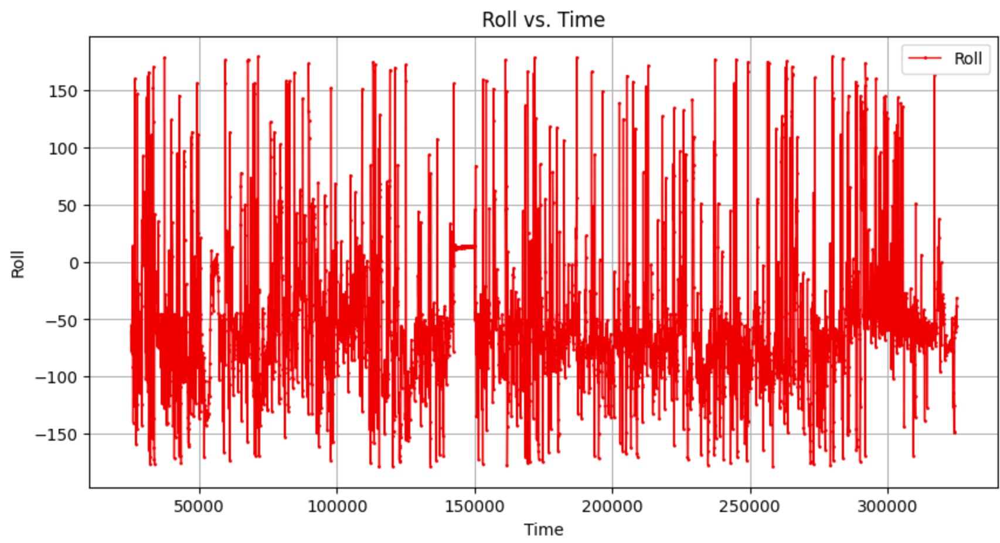
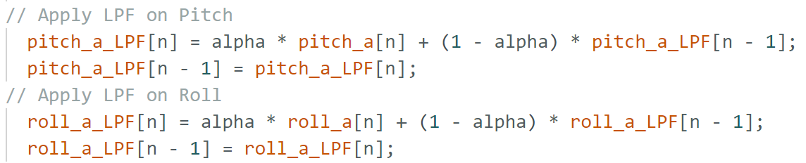
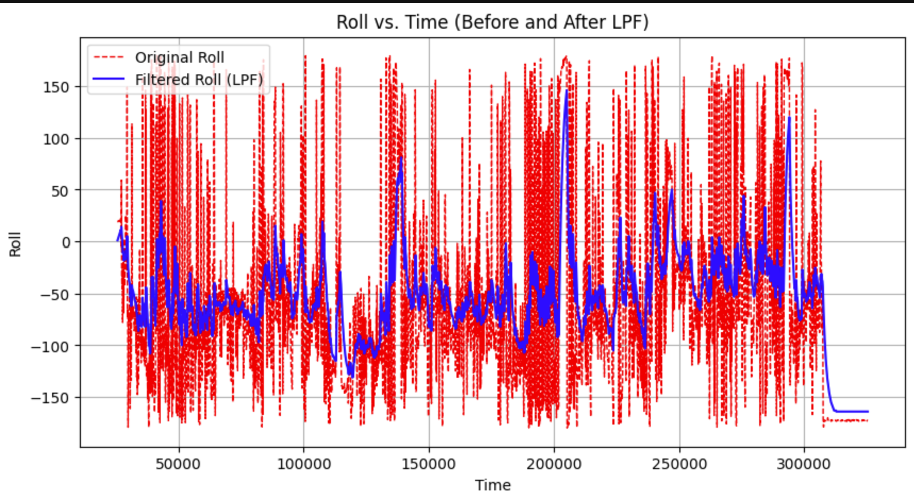
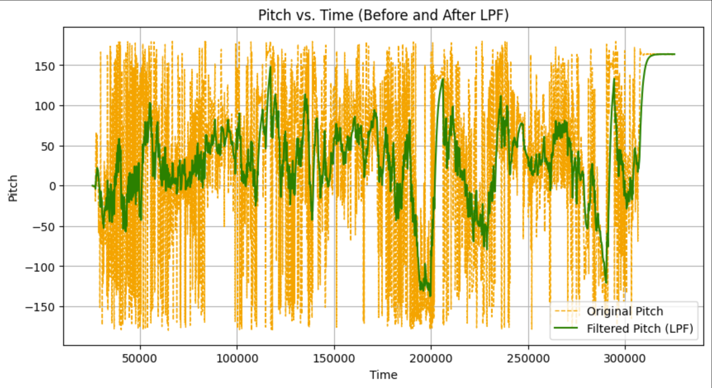
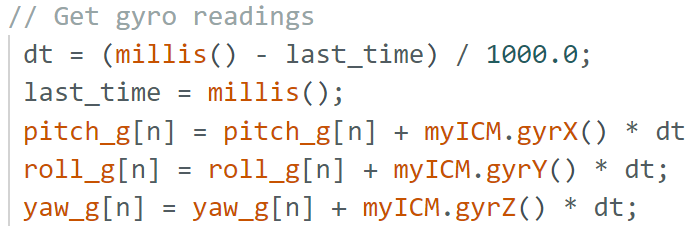
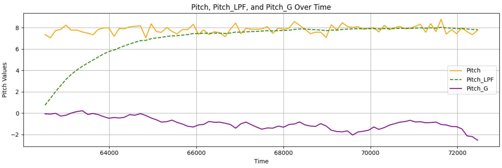
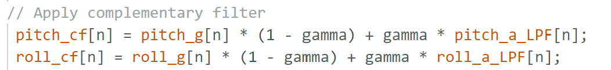
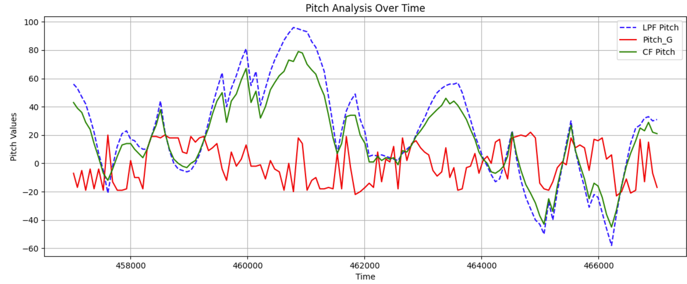

IMU Lab Report
Objective
This lab focuses on setting up and analyzing IMU data from the SparkFun Artemis board.
IMU Setup
IMU Connection
To set up the IMU, I plugged it into the Artemis and then ran the example code provided to ensure it was working as intended.
Hardware Connection:

AD0_VAL Definition
In the example code, AD0_VAL is assigned a value of 1, signifying that the ADR jumper on the IMU has not been bridged. This setting designates the IMU’s address as 0x69, making SPI communication possible. If the jumper were soldered, SPI communication would be disabled.
IMU Basic Testing & Observations
Using the example code, I tested the IMU by applying different types of movement. When the IMU accelerates in a particular direction, only the corresponding accelerometer values change, while the gyroscope shows minimal variation. During rotation, the accelerometer readings fluctuate continuously, whereas the gyroscope detects changes only while the motion is happening. When flipped, the accelerometer readings adjust as different axes align with gravity. Once the IMU remains at a fixed angle, the gyroscope records small values since it measures angular velocity rather than absolute position. The video below illustrates these behaviors as the IMU is flipped, rotated, and accelerated.
LED Startup Indicator
I added code to make the Artemis blue light blink, indicating that the IMU is properly connected.
Blink Code:

Accelerometer
Pitch & Roll Equations

Pitch & Roll at -90°, 0°, 90°
Readings seen in video:
Accelerometer Accuracy
The accelerometer accuracy seems to be alright if it is held steady at an angle. Even then, the sensor readings will keep changing. A fourier transform will assist with filtering out the noise from the sensor readings.
Fourier Transform Analysis
I sent data from arduino to python, and then did a fourier transform to better see what area of signal the noise was located. The graph of my fourier transform lead me to select a cutoff frequency of 5 hertz, as below this level is where the noise is. Here are graphs of my raw data of pitch and roll vs time along with the FFT plots. Note: the Frequency axis here should be scaled by 10,000.
Raw Roll:
Raw Pitch:

FFT Roll:

FFT Pitch:

Low-Pass Filter Implementation
I implemented a low pass filter to clean the noise out of the raw pich and roll data. I used .1 as my alpha, which is calculate from dt = 1/(sampling rate), RC = 1/(2*pi*cutoff freq), and alpha=dt/(dt+RC) using a sampling rate of about 270 message/min and a cutoff frequency of 5 Hz. Note: the Frequency axis here should be scaled by 10,000.
LPF Code:
LPF Roll:
LPF Pitch:
LPF Roll:

LPF Pitch:

Gyroscope
Pitch, Roll, and Yaw Computation
Gyroscope Code:
Gyroscope readings vs. Accelerometer:
Pitch:
Roll:

Yaw:

Discussion
The data indicates that the gyroscope exhibits significantly less noise than the accelerometer, but tends to drift over time. The accelerometer provides more accurate readings when the IMU remains in a fixed position. Increasing the sampling frequency enhances the gyroscope’s accuracy by allowing for more frequent updates. To achieve a more reliable signal, I implemented a complementary filter that combines both accelerometer and gyroscope measurements using weighting factor of 0.8 to give more emphasis to the accelerometer's readings, as they proved to be more accurate. The filter removes noise and drift from the input signal.
Complementary Filter
CF Code:
CF Pitch:
CF Roll:

Sample Data
IMU Sampling Speed: I rewrote my main Arduin loop, removing all prints and delays. The resulting Arduino loop runs faster (362Hz) than the IMU can process data (48Mhz).
Final Loop Code, storing data in arrays:
Stored IMU Data
| Time (ms) | Pitch | Roll | Yaw |
|---|---|---|---|
| 100 | 0.25 | -0.30 | 0.10 |
| 200 | 0.50 | -0.20 | 0.15 |
Bluetooth Data Transmission
Recording a Stunt
Car Setup
Include a video of your RC car experiment.